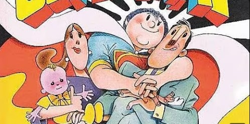

The Supermãe
Lançado orginalmente em 1984, Ziraldo escreveu "The Supermãe" como uma forma de homenagear as mães brasileiras, exaltando de
maneira bem-humorada e crítica a dedicação, o carinho e os
"Super-Poderes" que as mães exercem no cotidiano. A obra reflete seu olhar carinhoso e divertido sobre a figura materna, inspirada em sua própria experiência como filho e observador da sociedade.
Estilo e Linguagem
Uma Linguagem simples, acessivel e bem-humorada. O livro mistura texto e imagem com o traço caracteristico de Ziraldo. O tom é nostalgico, cômico e afetuoso.
"Ela é médica, professora, cozinheira, motorista, costureira, psicóloga, faxineira, bombeira... e ainda da conta do filho chorando!"